dlp, the poloidal angle 𝜗 given in Eq. (183) is written as
dlp, the poloidal angle 𝜗 given in Eq. (183) is written as
Once |𝒥∇ψ| is known, the value of 𝜃 of a point can be obtained by integrating expression (168), i.e.,
|
| (169) |
where the curve integration is along the contour Ψ = Ψj, xref,j is a reference point on the contour, where value of the poloidal angle is chosen as 𝜃ref,j. The choice of the positive direction of 𝜃 is up to users. Depending on the positive direction chosen, the sign of the Jacobian of the constructed coordinates can have a sign difference from the 𝒥 appearing in Eq. (169). Denote the Jacobian of the constructed coordinates by 𝒥′, then
|
| (170) |
This sign can be determined after the radial coordinate and the positive direction of the poloidal angle are chosen. In GTAW code, I choose the positive direction of 𝜃 to be in anticlockwise direction when observers look along the direction of 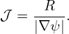. To achieve this, the line integration in Eq. (169) should be along the anticlockwise direction. (I use the determination of the direction matrix, a well known method in graphic theory, to determine the direction from a given set of discrete points on a magnetic surface.)
The span of 𝜃 defined by Eq. (169) is usually not 2π in one poloidal loop. This poloidal angle can be scaled by s(ψ) to define a new poloidal coordinate 𝜃, whose span is 2π in one poloidal loop, where s(ψ) is a magnetic surface function given by
|
| (171) |
Then 𝜃 is written as
where 𝜃ref,j = s(ψj)𝜃ref,j. Sine we have modified the definition of the poloidal angle, the Jacobian of the new coordinates (ψ,𝜃,ϕ) is different from that of (ψ,𝜃,ϕ). The Jacobian 𝒥new of the new coordinates (ψ,𝜃,ϕ) is written as The Jacobian 𝒥 can be set to various forms to achieve various poloidal coordinates, which will be discussed in the next section. After the Jacobian and the radial coordinate ψ is chosen, all the quantities on the right-hand side of Eq. (172) are known and the integration can be performed to obtain the value of 𝜃i,j of each point on each flux surface.[The reference points xref,j and the values of poloidal angle at these points can be chosen by users. One choice of the reference points xref,j are those points on the horizontal ray in the midplane that starts from the magnetic axis and points to the low filed side of the device and 𝜃ref,j at these points is chosen as zero (this is my choice in the GTAW code). In the TEK code, the reference points are chosen at the high-field side of the midplane and 𝜃ref,j = −π at the reference points.]
If the Jacobian 𝒥 is chosen to be of the following form
|
| (174) |
Then 𝜃i,j in Eq. (172) is written
|
| (175) |
and the Jacobian of new coordinates (ψ,𝜃,ϕ), 𝒥new, which is given by Eq. (173), now takes the form
|
| (176) |
Equation (175) indicates a set of poloidal points with equal arc intervals corresponds to a set of uniform 𝜃i points. Therefore this choice of the Jacobian is called the equal-arc-length Jacobian. Note that Eq. (175) does not involve the radial coordinate ψ. Therefore the values of 𝜃 of points on any magnetic surface can be determined before the radial coordinate is chosen.
The volume element in (ψ,𝜃,ϕ) coordinates is given by dV = |𝒥|d𝜃dϕdψ. If we choose a Jacobian that is independent of 𝜃, then uniform 𝜃 grids will correspond to grids with uniform volume interval. In this case, 𝒥 is written as
|
| (177) |
where h(ψ) is a function independent of 𝜃. Then 𝜃i,j in Eq. (172) is written
|
| (178) |
and the Jacobian of the new coordinates (ψ,𝜃,ϕ), 𝒥new, is given by Eq. (173), which now takes the following form:
|
| (179) |
Note that both 𝜃i,j and 𝒥new are independent of the function h(ψ) introduced in Eq. (177). (h(ψ) is eliminated by the normalization procedure specified in Sec. 6.4 due to the fact that h(ψ) is constant on a magnetic surface.) The equal-volume poloidal angle is also called Hamada poloidal angle.
The equal-volume poloidal angle is useful in achieving loading balance for parallel particle simulations. Assume that markers are loaded uniform in space and the poloidal angle is domain decomposed and assigned to different MPI process. Then the equal-volume poloidal angle can make marker number in each MPI process be equal to each other and thus work loading to each process be equal. (**check**If the domain decomposition is also applied to the radial direction, to achieve loading balance, then the radial coordinate ψ should be chosen in a way that makes ∮ (R∕∇ψ)dlp be independent of ψ, so that 𝒥new in Eq. (179) is constant in space.**)
If the Jacobian 𝒥 is chosen to be of the Boozer form:
|
| (180) |
then the poloidal angle in Eq. (172) is written as
|
| (181) |
The final Jacobian is given by
|
| (182) |
The usefullness of Boozer poloidal angle will be further discussed in Sec. 10.8 after we introduce a gneralized toroidal angle.
If the Jacobian 𝒥 is chosen to be of the following form
| 𝒥 (ψ,𝜃) = R2, |
then Eq. (156) implies that the local safety factor, 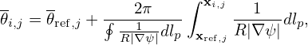 (ψ,𝜃) = −g∕Ψ′, is a magnetic surface function, i.e., the magnetic field lines are straight in (ψ,𝜃) plane. Then the poloidal angle in Eq. (172) is written
|
| (183) |
The Jacobian 𝒥new given by Eq. (173) now takes the form
|
| (184) |
Let us denote an arbitrary poloidal angle by 𝜃 and the above straight-field-line poloidal angle by 𝜗, then it is ready to find the following relation between 𝜃 and 𝜗:
|
| (185) |
where 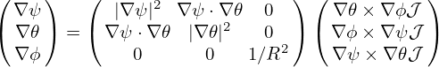 is the local safety factor corresponding to the arbitrary poloidal angle 𝜃, i.e.,
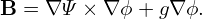 = B⋅∇ϕ∕(B⋅∇𝜃). [Proof: Using d𝜃 = dlp, the poloidal angle 𝜗 given in Eq. (183) is written as
Note that Boozer poloidal angle is very close to the poloidal angel disccused here because the two Jacobians are very similar:
|
| (187) |
All Jacobians introduced above can be written in a general form:
|
| (188) |
The choice of (i = 2,j = k = 0) gives the PEST coordinate, (i = j = 0,k = 2) give the Boozer coordinate, (i = j = 1,k = 0) gives the equal-arc coordinate, (i = j = k = 0) gives the Hammada coordinate.
Figure 6 compares the equal-arc-poloidal angle and the straight-line poloidal angle, which shows that the resolution of the straight-line poloidal angle is not good near the low-field-side midplane. Since ballooning modes take larger amplitude near the low-field-side midplane, better resolution is desired there. This is one reason that I often avoid using the straight-line poloidal angle in my numerical codes.
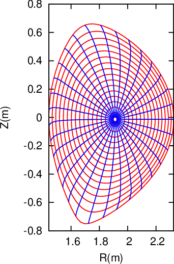 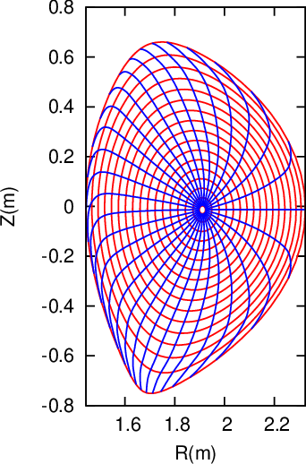
After the magnetic coordinates are constructed, we can evaluate the Jacobian 𝒥new by using directly the definition of the Jacobian, i.e.,
|
| (189) |
which can be further written as
|
| (190) |
where the partial differential can be evaluated by using numerical differential schemes. The results obtained by this way should agree with results obtained from the analytical form of the Jacobian. This consistency check provide a verification for the correctness of the theory derivation and numerical implementation. In evaluating the Jacobian by using the analytical form, we may need to evaluate ∇ψ, which finally reduces to evaluating ∇Ψ. The value of |∇Ψ| is obtained numerically based on the numerical data of Ψ given in cylindrical coordinate grids. Then the cubic spline interpolating formula is used to obtain the value of |∇Ψ| at desired points. (𝒥new calculated by the second method (i.e. using analytic form) is used in the GTAW code; the first methods are also implemented in the code for the benchmark purpose.) In the following sections, for notation ease, the Jacobiban of the constructed coordinate system will be denoted by 𝒥 , rather than 𝒥new.
The radial coordinate ψ can be chosen to be various surface function, e.g., volume, poloidal or toroidal magnetic flux within a magnetic surface. The frequently used radial coordinates include Ψ, and 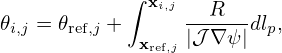, where Ψ is defined by
|
| (191) |
where Ψ0 and Ψa are the values of Ψ at the magnetic axis and LCFS, respectively. Other choices of the radial coordinates: the toroidal magnetic flux and its square root, Ψt, and 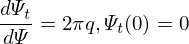, where Ψt and Ψt are defined by
|
| (192) |
and
|
| (193) |
respectively, where Ψt(0) and Ψt(1) are the values of Ψt at the magnetic axis and LCFS, respectively.
If ψ = 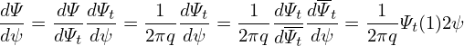, then
|
| (194) |
The cylindrical coordinates (R,ϕ,Z) is a right-hand system, with the positive direction of Z pointing vertically up. In GTAW code, the positive direction of 𝜃 is chosen in the anticlockwise direction when observers look along the direction of 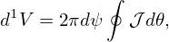. Then the definition 𝒥−1 = ∇ψ ×∇𝜃 ⋅∇ϕ indicates that (1) 𝒥 is negative if ∇ψ points from the magnetic axis to LCFS; (2) 𝒥 is positive if ∇ψ points from the LCFS to the magnetic axis. This can be used to determine the sign of Jacobian after using the analytical formula to obtain the absolute value of Jacobian.
If ψ = Ψ or ψ = 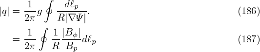, ∇ψ points from the magnetic axis to LCFS.
The volume between magnetic surfaces can also be used as a radial coordinate. The differential volume element is written as
|
| (195) |
Integrating over the toroidal angle, we obtain
|
| (196) |
Further integrating over the poloidal angle, we obtain
|
| (197) |
i.e.,
|
| (198) |
In codes I wrote, I stick to using Ψ as the radial coordinate when doing computation, and transform to other radial coordinates when presenting the results if needed.